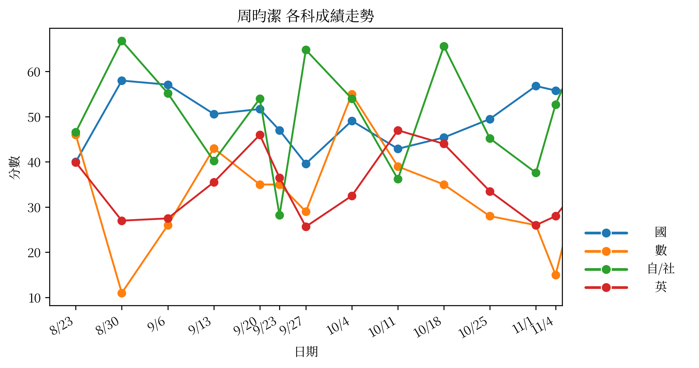

BCS score：56.8（排名：30；t 總分：131.12)
| 科目 | 分數 | 班級平均 | 班級標準差 | 說明 |
|---|---|---|---|---|
| 數 | 11.0 | 61.2 | 20.0 | 此科在最新一次考試低於班平均一個標準差 (z = -2.51) |
| 自 | 66.8 | 103.9 | 15.7 | 此科在最新一次考試低於班平均一個標準差 (z = -2.37) |
| 英 | 27.0 | 63.5 | 19.3 | 此科在最新一次考試低於班平均一個標準差 (z = -1.89) |
| 科目 | 最近次數 | 平均 z | 說明 |
|---|---|---|---|
| 數 | 2 | -2.4 | 平均 z = -2.4 |
| 自 | 2 | -2.06 | 平均 z = -2.06 |
| 英 | 2 | -1.75 | 平均 z = -1.75 |